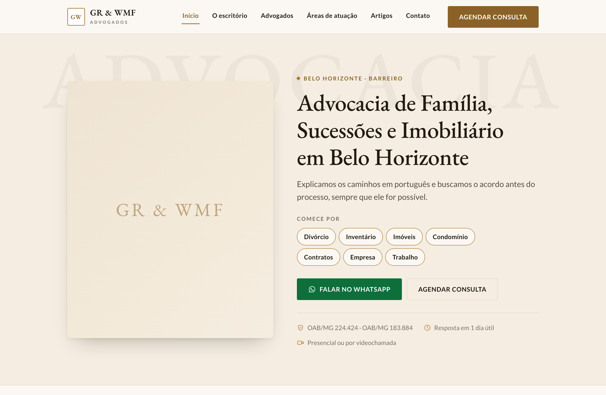
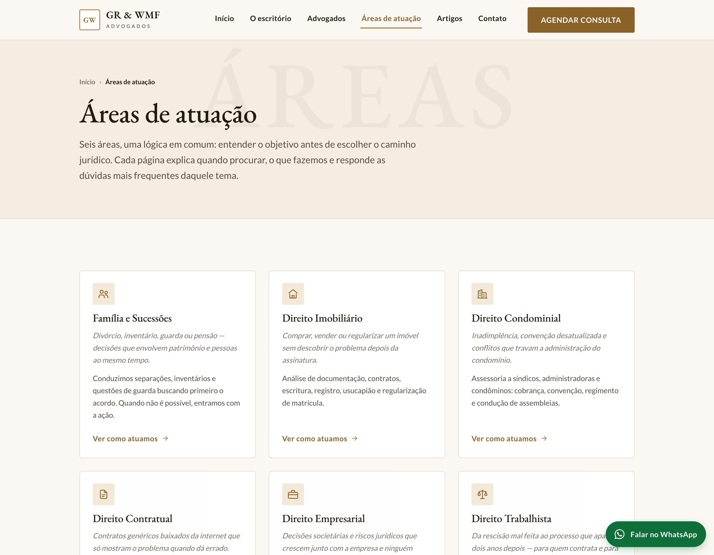
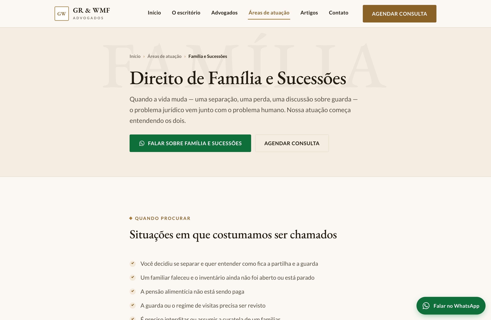
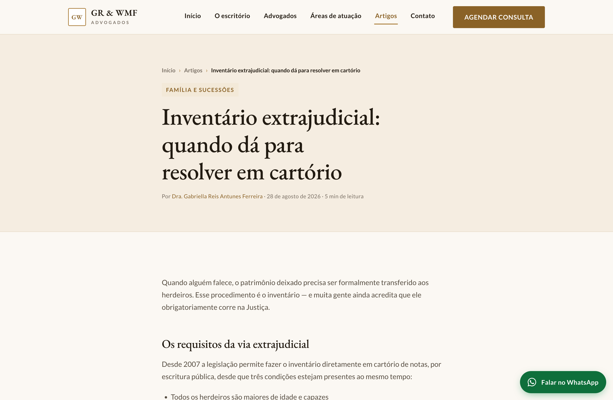
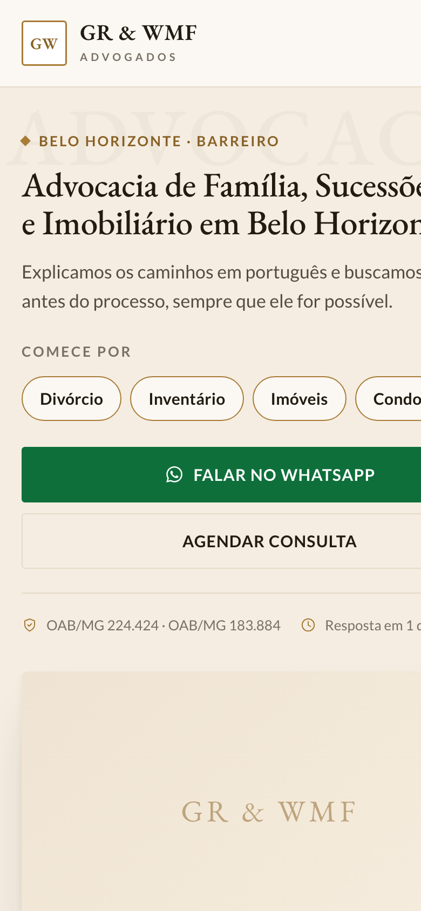
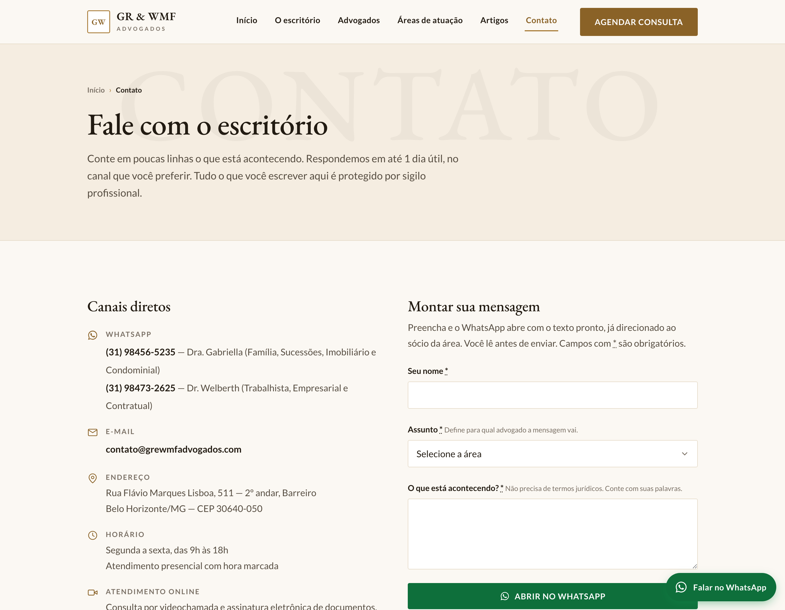

Um diagnóstico do site atual, e o novo site já construído — pronto para vocês verem funcionando antes de decidir qualquer coisa.
Antes de propor qualquer coisa, medi o site de vocês — página por página, direto no código e nos tempos de resposta. Estes números não são estimativa.
O botão de contato aponta para um número com parênteses, formato que o WhatsApp não aceita. É o único canal imediato do site.
Só o logotipo sobre uma foto — e, no celular, dois logotipos sobrepostos cobrindo o menu. Quem chega precisa rolar a página inteira para descobrir as áreas de atuação.
O site não tem as informações que o WhatsApp usa para montar o cartão de prévia. Numa profissão que vive de indicação, cada link enviado por um cliente chega sem imagem, sem título e sem descrição.
O bloco mais atualizado da página inicial é um feed automático de outro portal jurídico. Todos os links saem do site de vocês.
Nada disso aparece como “erro”. O site abre, tem as informações, funciona. O custo é invisível — e é justamente por isso que ele continua.
A auditoria identificou 37 pontos de melhoria, organizados por severidade em seis frentes: conversão, conteúdo, design, busca, técnica e conformidade com a LGPD e o Provimento 205/2021 da OAB. O relatório detalhado acompanha esta proposta, se houver interesse.
Construí o site inteiro antes de procurar vocês. São 20 páginas funcionando, que dá para abrir, navegar e testar no celular — em vez de imaginar a partir de um desenho.
Todo o site respeita os limites da publicidade na advocacia: sem divulgação de honorários, sem promessa de resultado, sem caso de êxito e sem depoimento de cliente. A captação vem de clareza, conteúdo útil e qualificação demonstrada — que é o que a norma permite e o que de fato funciona.
O que o escritório faz, onde atende e como falar com ele — sem precisar rolar. Os atalhos levam direto à área do problema de quem chegou.

O espaço à esquerda recebe a foto dos sócios. Está com marcador provisório porque a sessão de fotos ainda não existe — assim que houver, é só substituir.
Cada área ganha página própria, com os serviços, o passo a passo do atendimento e as perguntas frequentes daquele tema. É o que permite ser encontrado por assunto — e falar com quem procura por aquele assunto específico.

Cada card abre pela situação real do cliente, em itálico, antes de descrever a atuação jurídica.

Direito de Família e Sucessões. O botão de WhatsApp já sai com a mensagem escrita e endereçada à sócia responsável pela área.

Estrutura de artigo pronta, com autor, data e área relacionada. Os textos que aparecem são exemplos de formato — o conteúdo real fica a cargo dos sócios.

A tela inicial cabe sem rolar: mensagem, atalhos, contato e credenciais.

O formulário monta a mensagem e abre o WhatsApp do sócio certo conforme o assunto escolhido. Nada é gravado no site — o que simplifica a LGPD.
| Site atual | Site novo | |
|---|---|---|
| Carregamento da página inicial | 6,0 segundos | Abaixo de 0,5 s |
| Bibliotecas carregadas | jQuery, Bootstrap, Font Awesome | Nenhuma |
| Páginas para as áreas | 1 para as seis | 6, com FAQ própria |
| Títulos e descrições para busca | Ausentes | Em todas as páginas |
| Prévia ao compartilhar no WhatsApp | Sem imagem e sem texto | Cartão completo |
| Dados para buscadores e IAs | Nenhum | 7 tipos de marcação |
| Mapa do site | Não existe | Gerado a cada publicação |
| Conteúdo próprio | Feed de outro portal | Estrutura de artigos própria |
| Perguntas respondidas | Nenhuma | 30, marcadas para o Google |
| Zoom no celular | Bloqueado | Liberado |
| Cookies e LGPD | Só “Ok, entendi” | Aceitar ou recusar, com registro |
| Propriedade do site | Plataforma de terceiros | Do escritório, publicável em qualquer lugar |
O site está construído e funcionando. Três coisas dependem de vocês — e prefiro dizer isso agora do que depois.
Uma foto dos dois sócios e um retrato de cada um. Enquanto não existirem, o site mostra marcadores tipográficos.
Escrevi toda a copy para mostrar o formato e o tom. Nada disso vai ao ar sem a leitura e a correção de vocês — inclusive os artigos, os prazos de atendimento e as afirmações jurídicas.
O arquivo original do logo e uma caixa contato@grewmfadvogados.com, que passa mais estrutura do que endereços pessoais do Gmail.
Uma conversa de 20 minutos, presencial ou por vídeo, para eu mostrar o site funcionando e ouvir o que vocês querem manter, tirar ou mudar. Sem compromisso — se não fizer sentido, o material fica com vocês do mesmo jeito.